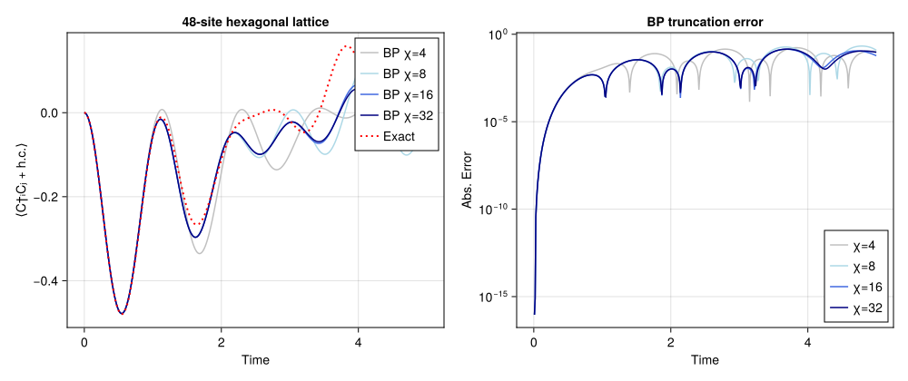

Real-time evolution of free fermions
Real-time evolution of spinless free fermions on a finite honeycomb lattice,
\[H = -\sum_{\langle ij \rangle} \left( c^\dagger_i c_j + \text{h.c.} \right) + \mu \sum_i (\pm 1)_i\, n_i, \qquad |\psi_t\rangle = e^{-iHt} |\psi_0\rangle.\]
A quench from a product state in a staggered (sublattice-alternating) field, evolved in real time by belief propagation + bond truncation, benchmarked against the exact single-particle solution. This reproduces panel (b) of FreeFermionBenchmark.pdf (48-site hexagonal lattice): the central-bond hopping $\langle C^\dagger_i C_j + \text{h.c.} \rangle$ vs. time for BP bond dimensions $\chi \in \{4, 8, 16, 32\}$, overlaid on the truncation-free reference.
This is a Canopy port of examples/realtime/example.jl (which uses TensorNetworkQuantumSimulator + NamedGraphs). Two representation notes:
- NamedGraphs labels honeycomb vertices
(i, j)and the bipartite sublattice isisodd(i+j); Canopy'shexagonal_latticelabels them(i, j, s)with the sublattice carried explicitly bys ∈ {1, 2}. The staggered field is therefore set per sublatticeshere — the physical image ofexample.jl'sisodd(sum(v))field. - The initial-occupation rule
sum(v) % 4 == 0 ? empty : occupiedis ported literally; on 48 sites it leaves 36 occupied (¾-filled, even parity — the PDF's "quarter filling" counts the ¼ holes). Flip to... ? occupied : emptyfor literal ¼ occupation.
Real time uses the same first-order split as example.jl: each dt step applies the on-site number layer, the hopping layer, then the on-site layer again. The exact reference applies the identical circuit to the single-particle correlation matrix, so it differs from the TN run only by bond truncation.
This example can be run from the command line with:
julia --project=examples examples/realtime/main.jlusing Canopy: hexagonal_lattice, product_state, BPMessages, belief_propagation,
UndirectedEdge, LocalGate, CompositeGate, Circuit, apply!, edge_coloring,
expect, virtualspace
using TensorKit
using TensorKitTensors.FermionOperators: f_num, f_hopping, fermion_space
using MatrixAlgebraKit: truncrank
using Dictionaries
using LinearAlgebra: Diagonal, transpose
using Printf
using TimerOutputs
using CairoMakieModel and run parameters
The defaults reproduce the full FreeFermionBenchmark.pdf panel (b) x-axis, evolving to T_FINAL = 5.0 (cost ≈ length(CHIS) · NSTEPS · BP). For a quicker preview that still shows BP tracking the exact curve through the first oscillations, lower T_FINAL (e.g. 1.5).
const M, N = 4, 6 # m × n unit cells → 2·m·n = 48 sites
const T_HOP = -1.0 # hopping coefficient t (H = -Σ c†c + h.c. + …)
const MU = 1.0 # staggered-field amplitude
const DT = 0.01
const T_FINAL = 5.0
const NSTEPS = round(Int, T_FINAL / DT)
const CHIS = (4, 8, 16, 32)
const BP_ITERS = 30 # per-step BP sweeps (warm-started from the previous step)
const ES = hexagonal_lattice(M, N) # open-boundary honeycomb
const VERTS = sort(unique(Iterators.flatten((e.src, e.dst) for e in ES)))
const HOPOP = f_hopping(ComplexF64, Trivial) # c†_i c_j + c†_j c_i2×2←2×2 TensorMap{ComplexF64, Vect[FermionParity], 2, 2, Vector{ComplexF64}}:
codomain: (Vect[FermionParity](0 => 1, 1 => 1) ⊗ Vect[FermionParity](0 => 1, 1 => 1))
domain: (Vect[FermionParity](0 => 1, 1 => 1) ⊗ Vect[FermionParity](0 => 1, 1 => 1))
blocks:
* FermionParity(0) => 2×2 reshape(view(::Vector{ComplexF64}, 1:4), 2, 2) with eltype ComplexF64:
0.0+0.0im 0.0+0.0im
0.0+0.0im 0.0+0.0im
* FermionParity(1) => 2×2 reshape(view(::Vector{ComplexF64}, 5:8), 2, 2) with eltype ComplexF64:
0.0+0.0im 1.0+0.0im
1.0+0.0im 0.0+0.0imThe staggered $\pm\mu$ field alternates on the two sublattices ($s = 1 \to +\mu$, $s = 2 \to -\mu$), and the initial occupation is empty iff sum(v) % 4 == 0 (the example.jl rule):
μ_of(v) = isodd(v[3]) ? MU : -MU
occ_of(v) = (sum(v) % 4 == 0) ? 0 : 1occ_of (generic function with 1 method)We measure on the occupied/empty-straddling edge nearest the lattice centre. Coherence $\langle C^\dagger C \rangle$ only builds on a bond whose two sites start with different occupation, so a bond inside a uniformly-filled region would stay $\approx 0$.
const _CENTER = ((M + 1) / 2, (N + 1) / 2)
const BOND = argmin(
e -> sum(abs2, ((e.src[1], e.src[2]) .+ (e.dst[1], e.dst[2])) ./ 2 .- _CENTER),
filter(e -> occ_of(e.src) != occ_of(e.dst), ES),
)
const VC, VN = BOND.src, BOND.dst((2, 3, 1), (3, 3, 2))Initial product state
function initial_state()
P = fermion_space(Trivial)
ps = Dictionary(VERTS, fill(P, length(VERTS)))
ls = Dictionary(VERTS, [fℤ₂(occ_of(v)) => [1.0] for v in VERTS])
return product_state(ComplexF64, ES, ps, ls)
endinitial_state (generic function with 1 method)Trotter layers
One dt step is single-site, hopping, single-site.
function build_layers()
n = f_num(ComplexF64, Trivial)
g_plus = exp(-im * MU * DT * n)
g_minus = exp(-im * (-MU) * DT * n)
g_hop = exp(-im * (T_HOP * DT) * HOPOP)
single = CompositeGate([LocalGate((v,), μ_of(v) > 0 ? g_plus : g_minus) for v in VERTS])
hop = Circuit([
CompositeGate([LocalGate((e.src, e.dst), g_hop) for e in class])
for class in edge_coloring(ES)
])
return single, hop
endbuild_layers (generic function with 1 method)Single-χ real-time trajectory
function run_chi(χ; verbose=true)
state = initial_state()
msgs = BPMessages(state)
msgs = belief_propagation(msgs, state; maxiter=BP_ITERS)
single, hop = build_layers()
trunc = truncrank(χ)
to = TimerOutput()
traj = zeros(Float64, NSTEPS + 1)
traj[1] = real(expect(state, msgs, HOPOP, BOND))
t_gate = 0.0
t_bp = 0.0
for step in 1:NSTEPS
t1 = time()
# `apply!` parallelizes its gates with `Threads.@threads`, so we time it from this
# (sequential) level rather than threading a shared `TimerOutput` into the gate loop.
state, msgs, _ = @timeit to "single" apply!(state, msgs, single)
state, msgs, _ = @timeit to "hop" apply!(state, msgs, hop; trunc)
state, msgs, _ = @timeit to "single" apply!(state, msgs, single)
t2 = time()
# each dt step perturbs the state only slightly, so BP reconverges quickly
# from the previous messages — the tol lets it stop early.
msgs = @timeit to "bp" belief_propagation(msgs, state; maxiter=BP_ITERS, tol=1e-10)
t3 = time()
t_gate += t2 - t1
t_bp += t3 - t2
traj[step+1] = real(expect(state, msgs, HOPOP, BOND))
if verbose && step % 25 == 0
bd = maximum(dim(virtualspace(state, e)) for e in ES)
@printf("χ=%2d t=%.2f meas=% .5f step=%.3fs (gate %.3f / bp %.3f) D=%d\n",
χ, step * DT, traj[step+1], t3 - t1, t2 - t1, t3 - t2, bd)
flush(stdout)
end
end
verbose && @printf("χ=%2d done — gate %.2fs, bp %.2fs total\n", χ, t_gate, t_bp)
return traj, to
endrun_chi (generic function with 1 method)Exact single-particle reference
The truncation-free reference uses the same circuit: $C[i,j] = \langle c^\dagger_i c_j \rangle$ evolves as $C \to \overline{u}\, C\, u^{\mathsf{T}}$ under each gate's single-particle unitary $u$, applied in the same order as the TN circuit.
apply_one_mode!(C, a, ph) = (@views(C[a, :] .*= conj(ph)); @views(C[:, a] .*= ph); C)
function apply_two_mode!(C, a, b, w)
blk = [a, b]
@views C[blk, :] .= conj(w) * C[blk, :]
@views C[:, blk] .= C[:, blk] * transpose(w)
return C
end
function exact_traj()
idx = Dict(v => k for (k, v) in enumerate(VERTS))
occ = Float64[occ_of(v) for v in VERTS]
w = exp(-im * (T_HOP * DT) * ComplexF64[0 1; 1 0])
ph = Dict(v => exp(-im * μ_of(v) * DT) for v in VERTS)
hop_order = collect(Iterators.flatten(edge_coloring(ES)))
i1, i2 = idx[VC], idx[VN]
obs(C) = real(C[i1, i2] + C[i2, i1])
traj = zeros(Float64, NSTEPS + 1)
C = complex(Matrix(Diagonal(occ)))
traj[1] = obs(C)
for step in 1:NSTEPS
for v in VERTS
apply_one_mode!(C, idx[v], ph[v])
end
for e in hop_order
apply_two_mode!(C, idx[e.src], idx[e.dst], w)
end
for v in VERTS
apply_one_mode!(C, idx[v], ph[v])
end
traj[step+1] = obs(C)
end
return traj
endexact_traj (generic function with 1 method)Run sweep and plot
Run the exact reference and the BP trajectory at each $\chi$, then plot the central-bond hopping vs. time alongside the absolute error from the exact curve.
function main()
println("Real-time free-fermion quench on a $(2 * M * N)-site hexagonal lattice (Canopy.jl)")
println("dt=$DT steps=$NSTEPS (t_final=$T_FINAL) χ=$(CHIS) bond=$(VC)–$(VN)")
println("filling = $(sum(occ_of, VERTS))/$(length(VERTS)) occupied\n")
times = collect(0:NSTEPS) .* DT
ex = exact_traj()
trajs = Dict{Int,Vector{Float64}}()
tos = Dict{Int,TimerOutput}()
for χ in CHIS
trajs[χ], tos[χ] = run_chi(χ)
end
println("\nTimerOutputs breakdown (χ=$(last(CHIS))):")
show(tos[last(CHIS)]; allocations=false, compact=true, sortby=:firstexec)
println()
colors = [:silver, :lightblue, :royalblue, :navy]
fig = Figure(size=(1000, 420))
ax1 = Axis(fig[1, 1]; xlabel="Time", ylabel="⟨C†ᵢCⱼ + h.c.⟩",
title="$(2 * M * N)-site hexagonal lattice")
for (k, χ) in enumerate(CHIS)
lines!(ax1, times, trajs[χ]; label="BP χ=$χ", color=colors[mod1(k, length(colors))])
end
lines!(ax1, times, ex; label="Exact", color=:red, linestyle=:dot, linewidth=2)
axislegend(ax1; position=:rt)
ax2 = Axis(fig[1, 2]; xlabel="Time", ylabel="Abs. Error", yscale=log10,
title="BP truncation error")
for (k, χ) in enumerate(CHIS)
err = max.(abs.(trajs[χ] .- ex), 1e-16) # floor for log scale
lines!(ax2, times, err; label="χ=$χ", color=colors[mod1(k, length(colors))])
end
axislegend(ax2; position=:rb)
outdir = joinpath(@__DIR__, "figs")
mkpath(outdir)
outfile = joinpath(outdir, "realtime_hexagonal.svg")
save(outfile, fig)
println("wrote $outfile")
return fig
end
main()Real-time free-fermion quench on a 48-site hexagonal lattice (Canopy.jl)
dt=0.01 steps=500 (t_final=5.0) χ=(4, 8, 16, 32) bond=(2, 3, 1)–(3, 3, 2)
filling = 36/48 occupied
χ= 4 t=0.25 meas=-0.20909 step=0.061s (gate 0.029 / bp 0.032) D=4
χ= 4 t=0.50 meas=-0.46999 step=0.083s (gate 0.031 / bp 0.052) D=4
χ= 4 t=0.75 meas=-0.33713 step=0.107s (gate 0.031 / bp 0.076) D=4
χ= 4 t=1.00 meas=-0.04522 step=0.168s (gate 0.031 / bp 0.137) D=4
χ= 4 t=1.25 meas=-0.03061 step=0.170s (gate 0.030 / bp 0.140) D=4
χ= 4 t=1.50 meas=-0.25369 step=0.141s (gate 0.032 / bp 0.109) D=4
χ= 4 t=1.75 meas=-0.32351 step=0.165s (gate 0.029 / bp 0.135) D=4
χ= 4 t=2.00 meas=-0.14215 step=0.151s (gate 0.024 / bp 0.127) D=4
χ= 4 t=2.25 meas= 0.00314 step=0.179s (gate 0.034 / bp 0.145) D=4
χ= 4 t=2.50 meas=-0.04556 step=0.230s (gate 0.063 / bp 0.167) D=4
χ= 4 t=2.75 meas=-0.13201 step=0.235s (gate 0.037 / bp 0.198) D=4
χ= 4 t=3.00 meas=-0.09819 step=0.237s (gate 0.034 / bp 0.203) D=4
χ= 4 t=3.25 meas=-0.01264 step=0.264s (gate 0.031 / bp 0.234) D=4
χ= 4 t=3.50 meas= 0.00952 step=0.296s (gate 0.036 / bp 0.259) D=4
χ= 4 t=3.75 meas=-0.01103 step=0.277s (gate 0.030 / bp 0.246) D=4
χ= 4 t=4.00 meas= 0.00139 step=0.277s (gate 0.032 / bp 0.245) D=4
χ= 4 t=4.25 meas= 0.04083 step=0.285s (gate 0.032 / bp 0.253) D=4
χ= 4 t=4.50 meas= 0.05384 step=0.278s (gate 0.060 / bp 0.218) D=4
χ= 4 t=4.75 meas= 0.03570 step=0.279s (gate 0.031 / bp 0.248) D=4
χ= 4 t=5.00 meas= 0.02263 step=0.283s (gate 0.036 / bp 0.247) D=4
χ= 4 done — gate 32.02s, bp 85.10s total
χ= 8 t=0.25 meas=-0.20909 step=0.087s (gate 0.067 / bp 0.020) D=8
χ= 8 t=0.50 meas=-0.47002 step=0.071s (gate 0.037 / bp 0.034) D=8
χ= 8 t=0.75 meas=-0.33799 step=0.137s (gate 0.041 / bp 0.095) D=8
χ= 8 t=1.00 meas=-0.05482 step=0.154s (gate 0.041 / bp 0.113) D=8
χ= 8 t=1.25 meas=-0.06801 step=0.127s (gate 0.041 / bp 0.087) D=8
χ= 8 t=1.50 meas=-0.26204 step=0.180s (gate 0.038 / bp 0.142) D=8
χ= 8 t=1.75 meas=-0.25985 step=0.183s (gate 0.064 / bp 0.119) D=8
χ= 8 t=2.00 meas=-0.09849 step=0.201s (gate 0.041 / bp 0.160) D=8
χ= 8 t=2.25 meas=-0.05302 step=0.243s (gate 0.076 / bp 0.167) D=8
χ= 8 t=2.50 meas=-0.10394 step=0.264s (gate 0.071 / bp 0.193) D=8
χ= 8 t=2.75 meas=-0.06890 step=0.247s (gate 0.040 / bp 0.206) D=8
χ= 8 t=3.00 meas= 0.00403 step=0.269s (gate 0.041 / bp 0.228) D=8
χ= 8 t=3.25 meas=-0.03427 step=0.319s (gate 0.067 / bp 0.252) D=8
χ= 8 t=3.50 meas=-0.09876 step=0.343s (gate 0.040 / bp 0.303) D=8
χ= 8 t=3.75 meas=-0.02830 step=0.352s (gate 0.069 / bp 0.283) D=8
χ= 8 t=4.00 meas= 0.09861 step=0.347s (gate 0.038 / bp 0.309) D=8
χ= 8 t=4.25 meas= 0.08935 step=0.349s (gate 0.037 / bp 0.312) D=8
χ= 8 t=4.50 meas=-0.04412 step=0.357s (gate 0.044 / bp 0.314) D=8
χ= 8 t=4.75 meas=-0.09758 step=0.319s (gate 0.036 / bp 0.283) D=8
χ= 8 t=5.00 meas= 0.00345 step=0.350s (gate 0.041 / bp 0.310) D=8
χ= 8 done — gate 24.36s, bp 96.89s total
χ=16 t=0.25 meas=-0.20909 step=0.129s (gate 0.088 / bp 0.041) D=16
χ=16 t=0.50 meas=-0.47002 step=0.115s (gate 0.094 / bp 0.021) D=16
χ=16 t=0.75 meas=-0.33799 step=0.123s (gate 0.080 / bp 0.043) D=16
χ=16 t=1.00 meas=-0.05482 step=0.197s (gate 0.079 / bp 0.118) D=16
χ=16 t=1.25 meas=-0.06802 step=0.284s (gate 0.114 / bp 0.170) D=16
χ=16 t=1.50 meas=-0.26226 step=0.202s (gate 0.063 / bp 0.140) D=16
χ=16 t=1.75 meas=-0.26173 step=0.310s (gate 0.074 / bp 0.236) D=16
χ=16 t=2.00 meas=-0.10140 step=0.365s (gate 0.083 / bp 0.282) D=16
χ=16 t=2.25 meas=-0.05055 step=0.355s (gate 0.090 / bp 0.265) D=16
χ=16 t=2.50 meas=-0.09570 step=0.380s (gate 0.081 / bp 0.298) D=16
χ=16 t=2.75 meas=-0.07166 step=0.389s (gate 0.062 / bp 0.327) D=16
χ=16 t=3.00 meas=-0.02282 step=0.479s (gate 0.086 / bp 0.393) D=16
χ=16 t=3.25 meas=-0.05186 step=0.506s (gate 0.075 / bp 0.431) D=16
χ=16 t=3.50 meas=-0.06705 step=0.530s (gate 0.087 / bp 0.443) D=16
χ=16 t=3.75 meas= 0.01376 step=0.547s (gate 0.108 / bp 0.439) D=16
χ=16 t=4.00 meas= 0.06479 step=0.703s (gate 0.111 / bp 0.592) D=16
χ=16 t=4.25 meas=-0.00382 step=0.762s (gate 0.091 / bp 0.671) D=16
χ=16 t=4.50 meas=-0.06190 step=0.770s (gate 0.095 / bp 0.675) D=16
χ=16 t=4.75 meas= 0.00019 step=0.656s (gate 0.065 / bp 0.592) D=16
χ=16 t=5.00 meas= 0.06552 step=0.764s (gate 0.077 / bp 0.687) D=16
χ=16 done — gate 44.41s, bp 169.24s total
χ=32 t=0.25 meas=-0.20909 step=0.278s (gate 0.164 / bp 0.114) D=32
χ=32 t=0.50 meas=-0.47002 step=0.602s (gate 0.372 / bp 0.230) D=32
χ=32 t=0.75 meas=-0.33799 step=0.406s (gate 0.167 / bp 0.239) D=32
χ=32 t=1.00 meas=-0.05482 step=0.464s (gate 0.183 / bp 0.281) D=32
χ=32 t=1.25 meas=-0.06802 step=0.616s (gate 0.185 / bp 0.431) D=32
χ=32 t=1.50 meas=-0.26227 step=0.829s (gate 0.275 / bp 0.554) D=32
χ=32 t=1.75 meas=-0.26172 step=0.893s (gate 0.192 / bp 0.701) D=32
χ=32 t=2.00 meas=-0.10130 step=1.251s (gate 0.381 / bp 0.870) D=32
χ=32 t=2.25 meas=-0.05030 step=1.482s (gate 0.230 / bp 1.252) D=32
χ=32 t=2.50 meas=-0.09579 step=1.519s (gate 0.189 / bp 1.330) D=32
χ=32 t=2.75 meas=-0.07238 step=1.758s (gate 0.221 / bp 1.537) D=32
χ=32 t=3.00 meas=-0.02291 step=1.835s (gate 0.320 / bp 1.515) D=32
χ=32 t=3.25 meas=-0.04890 step=2.029s (gate 0.457 / bp 1.572) D=32
χ=32 t=3.50 meas=-0.06387 step=2.093s (gate 0.332 / bp 1.761) D=32
χ=32 t=3.75 meas= 0.00950 step=2.395s (gate 0.444 / bp 1.951) D=32
χ=32 t=4.00 meas= 0.05583 step=2.569s (gate 0.435 / bp 2.134) D=32
χ=32 t=4.25 meas=-0.00035 step=3.019s (gate 0.416 / bp 2.604) D=32
χ=32 t=4.50 meas=-0.04208 step=3.173s (gate 0.445 / bp 2.727) D=32
χ=32 t=4.75 meas= 0.00251 step=3.530s (gate 0.459 / bp 3.070) D=32
χ=32 t=5.00 meas= 0.03193 step=3.750s (gate 0.463 / bp 3.287) D=32
χ=32 done — gate 162.87s, bp 653.43s total
TimerOutputs breakdown (χ=32):
─────────────────────────────────
Section ncalls time %tot
─────────────────────────────────
single 1.00k 8.11s 1.0%
hop 500 155s 19.0%
bp 500 653s 80.0%
─────────────────────────────────
wrote /mnt/home/ldevos/Projects/Canopy/main/docs/src/examples/realtime/figs/realtime_hexagonal.svg

This page was generated using Literate.jl.